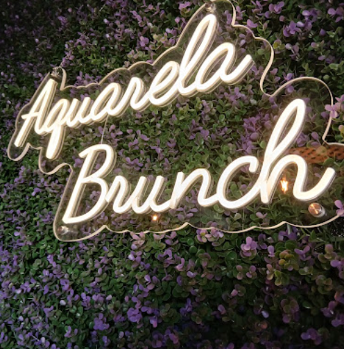

AQUARELA BRUNCH
Um espaço acolhedor em Baião onde os sabores, a criatividade e os bons momentos se encontram. Descubra uma experiência descontraída pensada para começar bem o dia e aproveitar cada momento.
O NOSSO BRUNCH
No Aquarela Brunch, juntamos o conceito de brunch aos sabores e produtos da nossa região. Criámos um espaço onde pode desfrutar de uma refeição tranquila, seja ao pequeno-almoço, ao almoço ou num momento especial com quem mais gosta.

XXX
XX,XX€
XXX
XX,XX€
XXX
XX,XX€
XXX
XX,XX€
XXX
XX,XX€
SABORES DE BAIÃO
Valorizamos os sabores da nossa terra e procuramos trazer para a nossa mesa o melhor que Baião tem para oferecer, combinando tradição e inspiração com uma abordagem descontraída e atual.
Cada momento à mesa é uma oportunidade para descobrir novos sabores. No Aquarela Brunch, damos especial atenção aos produtos locais e à identidade gastronómica da região, criando uma experiência que sabe a Baião.
GALERIA
VISITA-NOS
Morada
R. Cmte. Agatão Lança 36, 4640-142 Baião
Horário
Venha visitar-nos e desfrute de um momento tranquilo no coração de Baião. Consulte os nossos horários antes da sua visita.